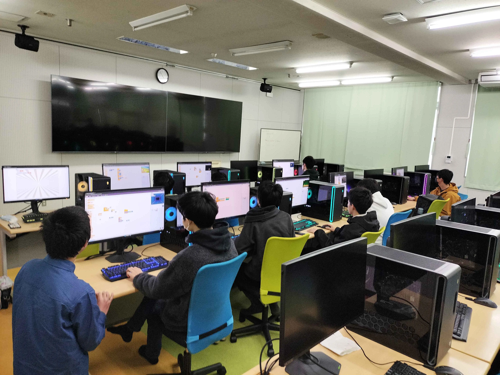

見学・体験について
情報工学班では活動日（平日16時から17時50分(最終:17時30分)）に情報棟2階プログラミング室（Innovative Lab.）で新入生の活動見学や活動体験ができます！
情報班の活動内容に少しでも興味があれば、1日だけでも数分だけでもかまわないので、ぜひ来てください！
※放課後16時から17時頃まで不定期で基本情報技術者試験のための補習をせん孔室で行っているため、プログラミング室に班員がいないことがあります。
見学・体験内容
// その時にプログラミング室にいる2,3年生が教えられることならなんでも可能！
// 相談なども可能な限り答えます！
